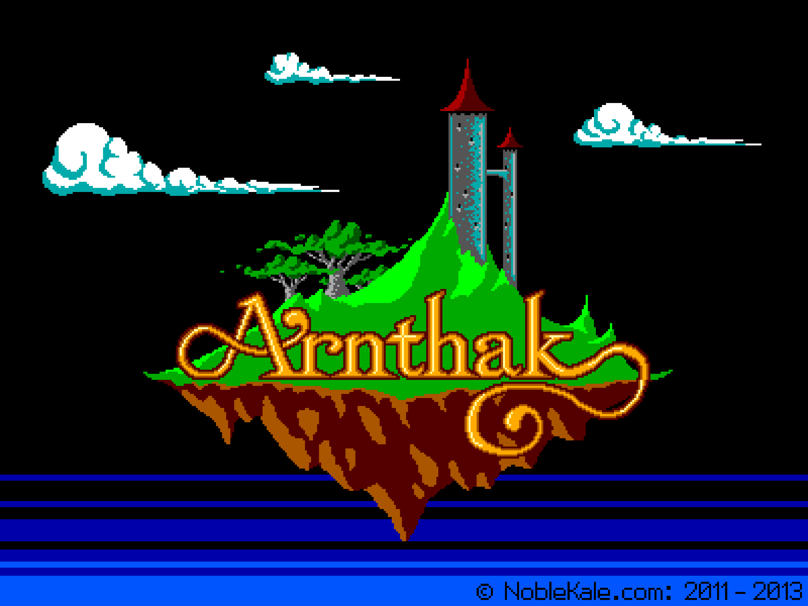
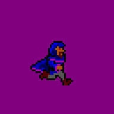
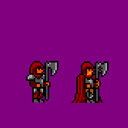
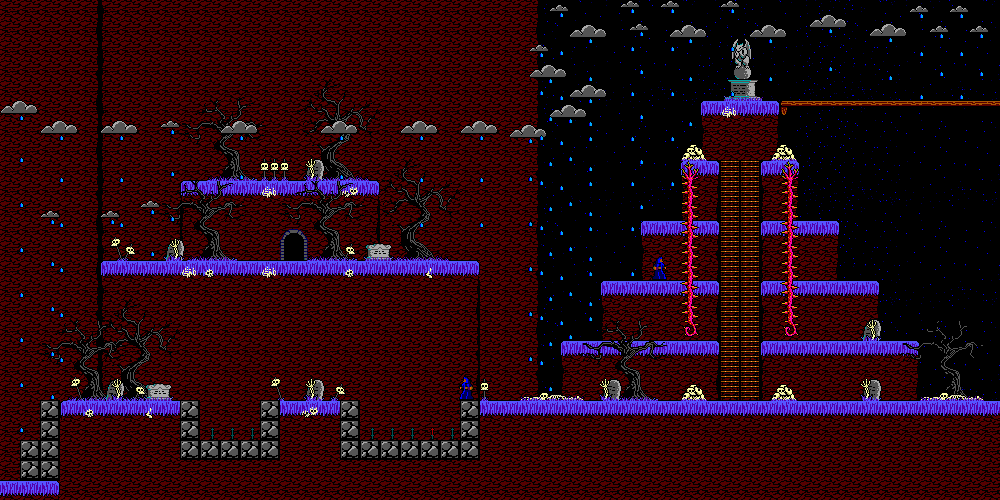
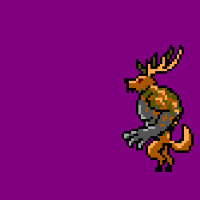

Arnthak
Arthak is an retro-styled adventure/platformer by Glenn "Noble Kale" Lewis. The graphic style borrows from the early 90's era of PC gaming, limited color pallete and all, and the game is based on Welsh lore, making for a very unique experience. Kale found me on Reddit in 2013 after I started dabbling in pixel art. Over the next year or so, he would contract me for my time to produce art assets. The game remains unfinished, but working on it helped me buff my porfolio for game art, should I pursue it further.




